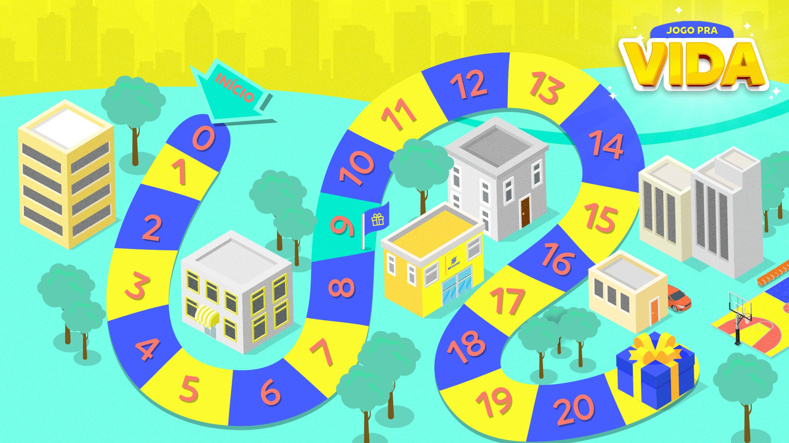
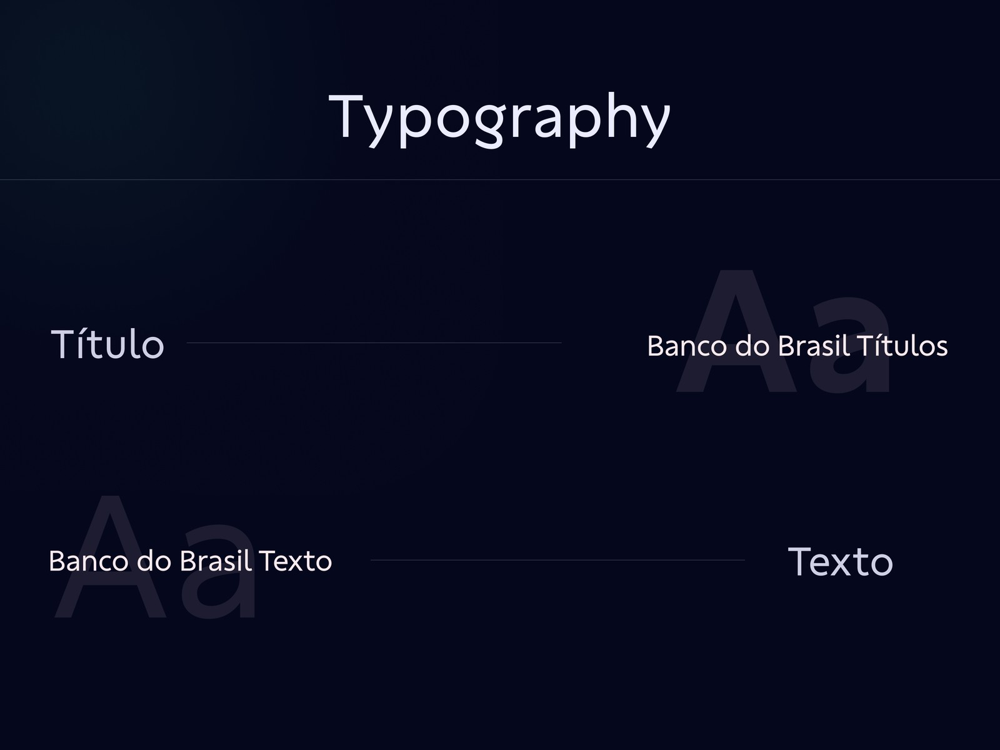
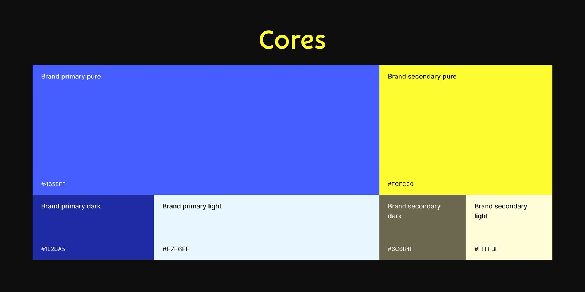
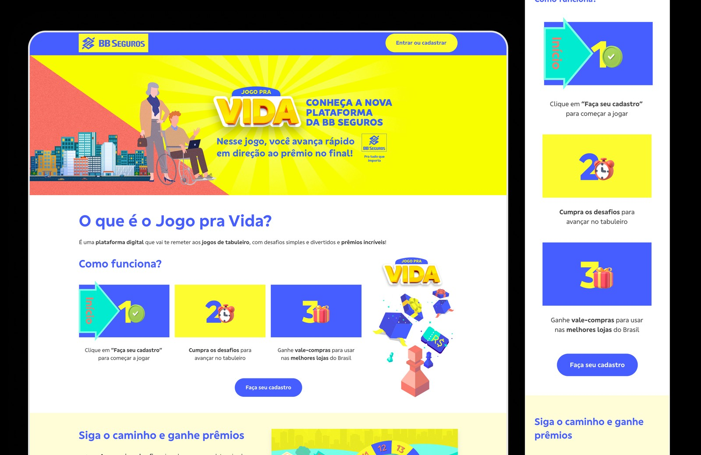
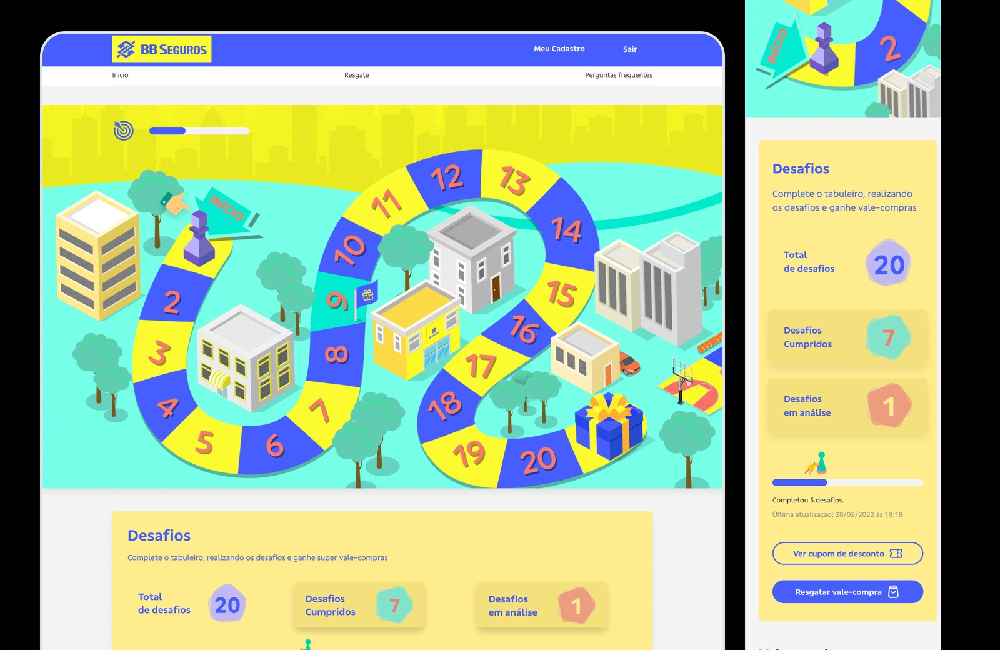
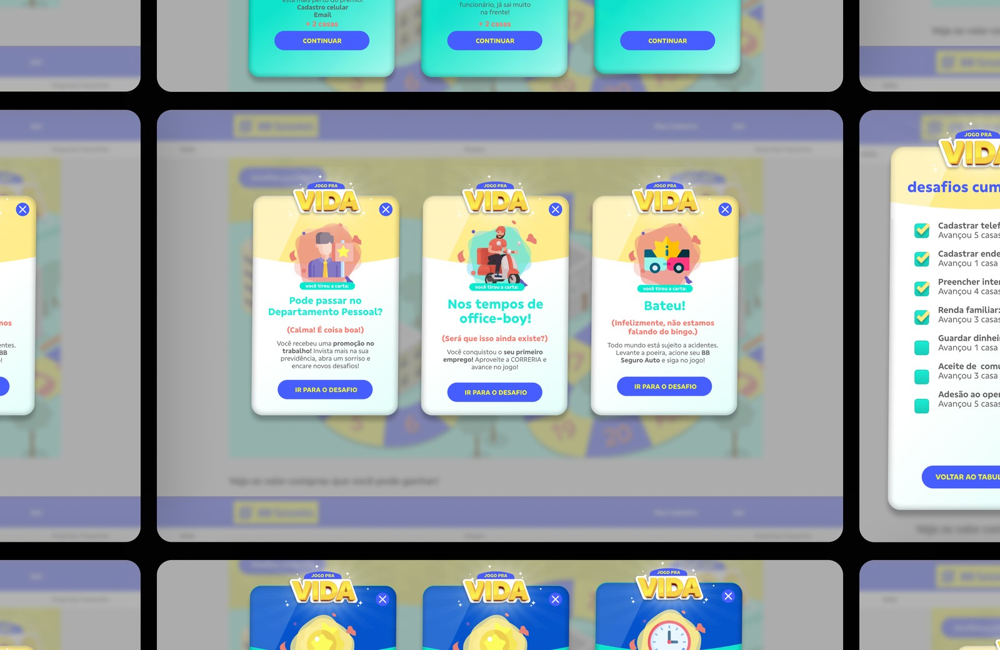
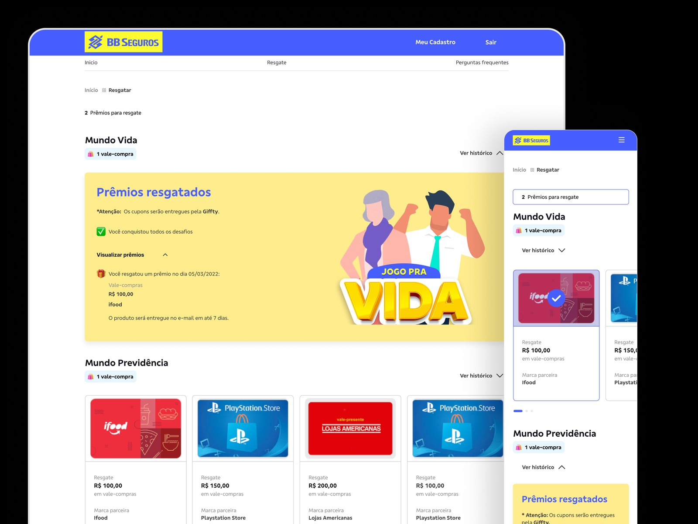
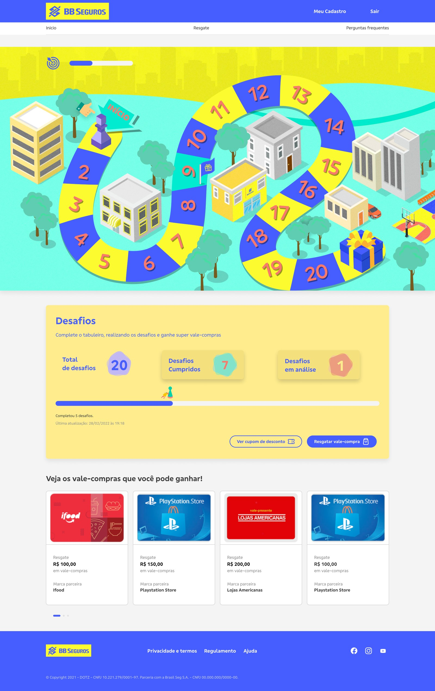

Discovery & Benchmark
Investigava o problema com stakeholders e analisava referências antes de desenhar qualquer solução.
Uma plataforma de engajamento do Banco do Brasil que transforma o preenchimento de cadastro em um jogo de tabuleiro. A cada informação que decide completar, o usuário ganha pontos, avança casas e, ao fechar o tabuleiro, resgata um voucher ou vale-compras. Atuei na experiência que faz o cadastro deixar de ser obrigação e virar progresso.

O Jogo Pra Vida é uma plataforma de engajamento e cashback do Banco do Brasil desenhada como um jogo de tabuleiro. Em vez de um formulário longo, cards pedem informações de cadastro; o usuário escolhe o que preencher e ganha pontos que avançam seu peão pelas casas. No caminho, cards de ação trazem situações reais da vida — uma formatura, a chegada de um filho, a compra de um carro — e sugerem o produto certo do banco para aquele momento, como uma poupança, uma conta ou um seguro. A cada escolha, um card de parabéns. Ao fechar o tabuleiro, o progresso vira voucher ou vale-compras.
Entrei como Product Designer em um time enxuto de quatro pessoas, cobrindo o escopo completo de cada problema — do entendimento à interface final. Investigava a necessidade a fundo, levantava hipóteses, prototipava, testava com usuários reais e acompanhava a entrega até o fim, garantindo fidelidade ao que foi desenhado.
Todo o trabalho foi desenhado dentro do DHARMA, o robusto design system da Dotz. Partir de uma base madura de componentes e tokens deu consistência à plataforma e velocidade ao time — o esforço ia menos para reinventar padrões e mais para resolver o problema certo do usuário em cada tela.


Investigava o problema com stakeholders e analisava referências antes de desenhar qualquer solução.
Conversava com pessoas para entender como reagiriam a um cadastro em formato de jogo — de onde saíram insights que moldaram a mecânica.
Traduzia os insights em regras do jogo: como pontuar, avançar e recompensar sem frustrar quem joga.
Prototipava as soluções para validar as ideias rápido, antes de entrar em desenvolvimento.
Validava com usuários reais e ajustava o desenho a partir do que observava.
Documentava e acompanhava o desenvolvimento de perto, garantindo fidelidade ao design.

A porta de entrada: apresenta a plataforma, explica em poucos passos o que é o jogo e como funciona, e convida a pessoa a começar. É onde a proposta fica clara antes do primeiro clique.

A tela central: o peão do usuário, as casas percorridas, os desafios cumpridos e o quanto falta para fechar o tabuleiro e resgatar o prêmio.

O motor do jogo. Cards de cadastro pedem uma informação e mostram na hora quantos pontos ela vale — preencher vira decisão, não obrigação. Cards de ação trazem situações reais da vida — formatura, filhos, um carro novo — e sugerem o produto certo do banco. A cada escolha, um card de parabéns celebra a conquista.

Ao completar o tabuleiro, o progresso vira voucher ou vale-compras, pronto para usar com marcas parceiras.
O Jogo Pra Vida rodou por duas temporadas: sinal de que a primeira entregou resultado suficiente para o banco trazê-lo de volta.
Atraiu e manteve engajado o público de 22 a 40 anos, faixa central da estratégia do banco.
Ao virar jogo, o formulário deixou de ser barreira: as informações eram preenchidas porque o usuário queria avançar — e a mecânica sem revés, vinda das entrevistas, sustentou o engajamento até o resgate.
